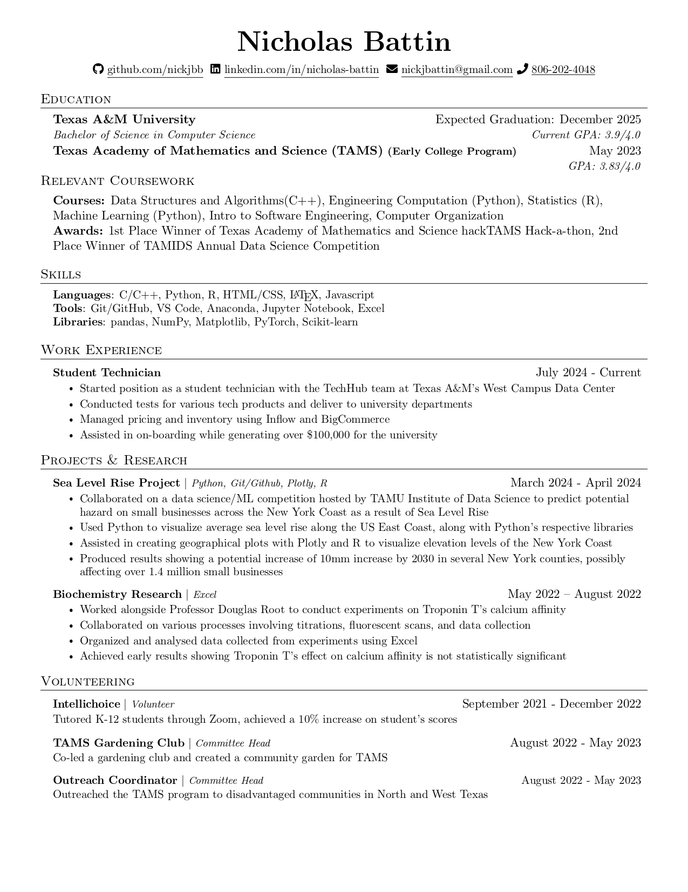

Languages
Python
C++
Java
Haskell
HTML
CSS
Javascript
R
Technical Skills
- Pandas
- Scikit-learn
- Pytorch
- Excel
- Matplotlib
- Jupiter Notebook
- NumPy
- Git/Github
Interests
For my future career, I want to pursue Data Engineering. I find that developing data pipeline infrastructure to be useful, especially with the growth of AI and the necessity of clean data. I've worked previously on projects involving data science and analytics, including biochemistry research and data science competitions. I am looking for an internship into either Data Engineering or Data Science so that I have an opportunity to further learn about how data is handled in industry.
